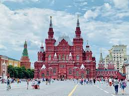
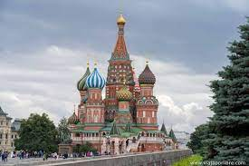
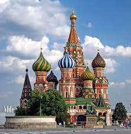

VIAJE Moscu
Este viaje consistira en realizar una ruta por los sitios mas emblematicos y interesantes de la ciudad francesa
Este viaje consistira en realizar una ruta por los sitios mas emblematicos y interesantes de la ciudad francesa
Visita una de las plazas más famosas de Rusia. Declarada en los 90’s como Patrimonio de la Humanidad esta es uno de los lugares más fotografiados por todos los viajeros ya que aquí se dieron cita importantes eventos históricos. Alrededor de este cuadro se encuentran los atractivos más importantes de la ciudad como el Mausoleo de Lenin.
En esta área encontrarás cuatro palacios y cuatro catedrales dignas de perderte en ellas por un buen rato para observar su belleza. También Patrimonio de la Humanidad, esta es la zona desde donde gobierna el presidente. La zona exterior del Kremlin y la plaza de las catedrales están abiertas al público.
Otra de las maravillas en Moscú es esta reconocida Catedral que se levanta sobre la Plaza Roja y es uno de los lugares de Rusia más emblemáticos. Construida en 1554, aún sigue en pie pese a varios incendios. Esta iglesia ortodoxa con su estilo arquitectónico único y coloridas cúpulas se convierte en un icono de la ciudad.
Por la falta de espacio para enterrar a los parisienses, en el siglo XVIII el gobierno francés decidió convertir en un cementerio común a una red de túneles y cuartos subterráneos localizados en lo que eran minas de piedra caliza. En la actualidad se conserva como un osario que alberga a más de seis millones de esqueletos humanos. Es el más grande de su tipo en Europa. Una atracción en París, para los más valientes.